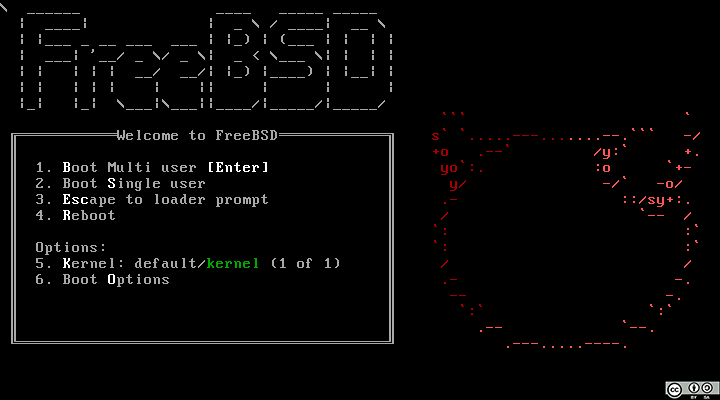

FreeBSD je prosto dostopen odprtokodni operacijski sistem, ki izvira iz Unixa. Razvoj FreeBSD se je pričel leta 1993 na predelavi izvorne kode 386BSD.
Zaradi vprašljivosti dovoljenja nekaterih delov te izvorne kode so različico 2.0, ki je izšla januarja 1995, v veliki meri prenovili in je temeljila na 4.4BSD-Lite Univerze Kalifornije v Berkeleyju.
FreeBSD je izdan pod dovoljenjem BSD (Berkeley Software Distribution), ki vsakomur dovoljuje uporabo in nadaljnje razpečevanje, dokler se ohranita oznaki o avtorskih pravicah in dovoljenju BSD.
V nasprotju z GPL to ne preprečuje uporabe in razpečevanja delov kode pod drugimi dovoljenji.
V nasprotju z Linuxom, kjer ena skupina razvija jedro, drugi (projekt GNU) uporabniške pripomočke (lupina, osnovni ukazi ipd.), spet tretji pa vse skupaj zapakirajo v distribucije, se pri FreeBSD operacijski sistem razvija kot celota, njegova izvorna koda je na voljo v enem sistemu za nadzor različic (CVS).
Tudi to je eden od razlogov, da FreeBSD velja za zelo učinkovitega, zanesljivega in robustnega.

FreeBSD bootloader
Avtor: Jakob Breivik Grimstveit